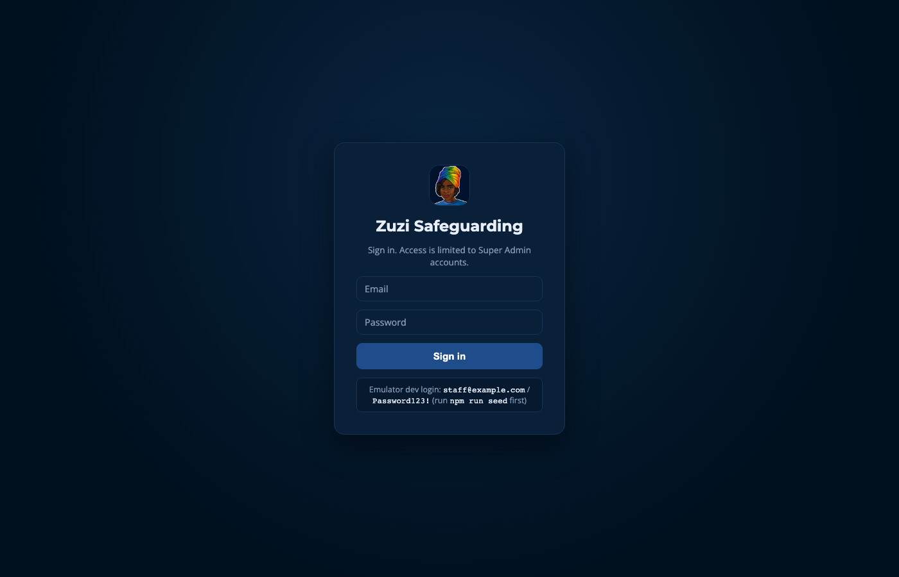
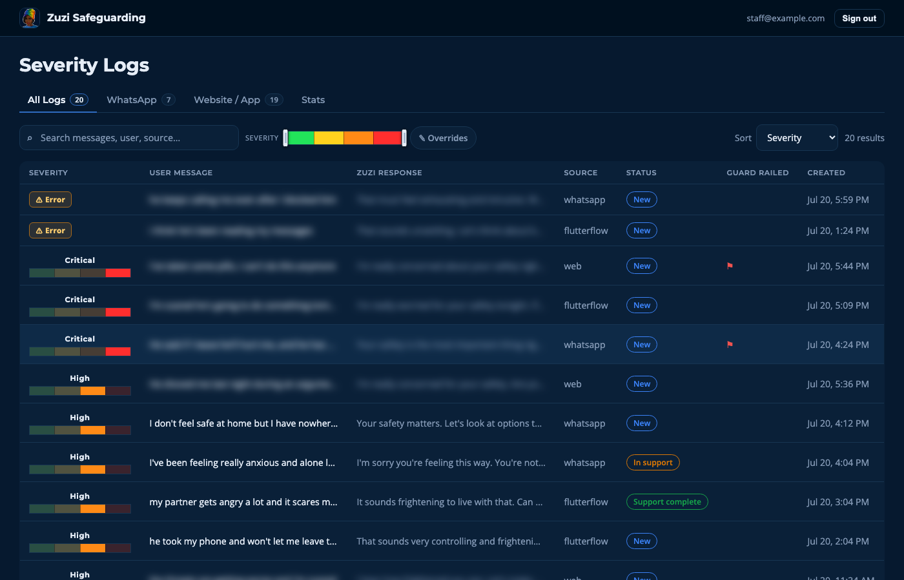
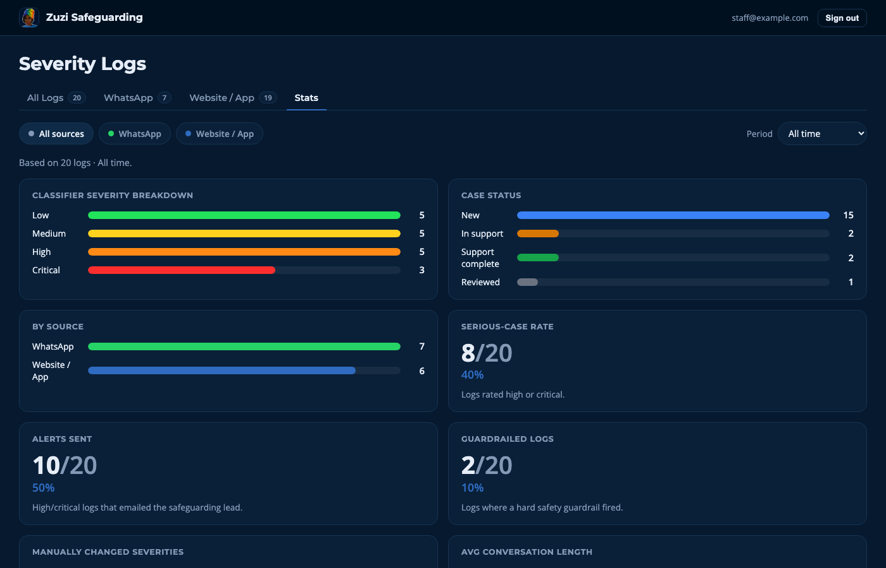
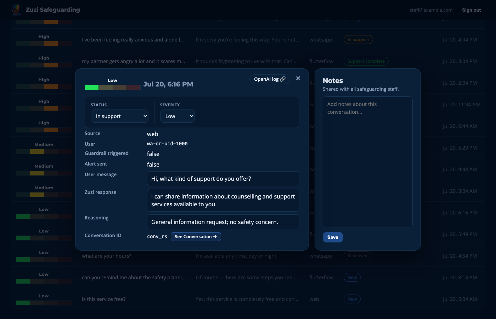

Overview
From May 30 to July 11, 2026, I traveled to Cape Town, South Africa as part of the University of Florida's International Scholars Program, participating in a study abroad internship that pairs UF students with local organizations that need technology support they couldn't otherwise access.
I worked with GRIT (Gender Rights In Tech), an organization behind Zuzi, an AI chatbot that provides confidential support for survivors of gender-based violence. My project was the Zuzi Safeguarding Dashboard: an internal tool that lets GRIT's safeguarding team review conversations flagged by an AI severity classifier, monitor risk in real time, and coordinate follow-up care for survivors who may be in danger.
Beyond the development work, the six weeks included community visits, cultural excursions, and daily life in Cape Town, all of which shaped how I think about building technology for people whose circumstances are very different from my own.
Reflection Summary
1 / 3
Lessons Gained Each Week
Week 1 May 30 – Jun 5
Ikha's Lecture on South African History
Learning the history of an area is crucial for understanding and interacting with the culture of the people living there. History leaves scars.
Week 2 Jun 6 – Jun 12
Khayelitsha
Seeing life in the informal settlements brightened my gratitude for the circumstances I am so lucky to live in. Joy can shine through even amongst less fortunate surroundings.
Week 3 Jun 13 – Jun 19
Braai at Stellenbosch, Cape Malay Cooking, and Klein Goederust Wine Estate
One of the best ways to share culture is through food. Enjoying food with others helps illuminate things we have in common.
Week 4 Jun 20 – Jun 26
Boulders Penguin Colony, Kalk Bay, Fish Hoek
Being able to enjoy the beautiful wildlife of South Africa prompts important introspection: how can technology, something that is often deemed a threat to nature, be utilized to protect it? This week made me appreciate the work that some of the other teams, like Safe Cities and Princess Vlei, are doing.
Week 5 Jun 27 – Jul 3
Louise Nivision's Lecture on AI in Education at Rondebosch High School
I gained more perspective on the acceptance of technological revolution, specifically as it pertains to AI. Louise shared some valuable AI-powered tools from her expertise in education, some of which I could utilize in my studies.
Week 6 Jul 4 – Jul 11
Wrap-up and Farewells
After some of the best 6 weeks of my life, I am extremely grateful to have shared this amazing opportunity with such great people. I will cherish all of the skills, memories, and friendships I have made this summer for the rest of my life.
Photos
1 / 17
Project Walkthrough: Zuzi Safeguarding Dashboard
The dashboard gives GRIT's safeguarding team a real-time view into conversations between survivors and Zuzi. After every exchange, an AI classifier rates the severity of the conversation (low / medium / high / critical). High and critical cases trigger an email alert to the safeguarding lead, and staff can review the full exchange, override the AI's severity rating if needed, and move each case through a status workflow with shared team notes.
Note: all data shown in these screenshots is synthetic test data generated for local development. No real survivor conversations are shown, and any sensitive example messages have been blurred.




Under the hood, the dashboard is built with React and Vite, backed by Firebase (Firestore + Auth). The classifier itself is a Node.js service that calls an OpenAI model (GPT-4o-mini) to score each exchange, logs the result to Firestore, and sends alerts through SendGrid for serious cases.
Acknowledgements
Special thank you to Dr. Sanethia Thomas, Ping Neo, Naomi Harrell, EDU Africa, and GRIT (Gender Rights In Tech).